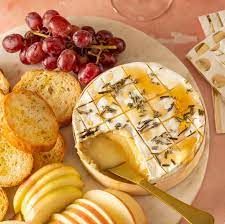

This is a great appitizer or side dish for a veriety of dishes. The first time I had it was with salmon, and I have made it with salads and pasta. But would also go well with steak or soups! There are many different ways to do baked brie, sweet, savory, nutty, fruity, the possibilitys are endless!
My baked brie is more on the savory side. I usualy use president cheese brand, super easy to find, and not too pricey. But double or tripple cream ones are amazing for baked brie.
Ingredients
- 1 round of brie
- 1 or 2 french baguetts
- Rosemary
- Tyme
- 3-5 cloves of garlic
- Olive oil
- Cyane powder
- Honey
- Butter
- Salt and pepper
- Set ovan to 400
- Score your brie
- Slice your bread, set on baking sheet and drizzle with olive oil.
- Set aside 1 garlic clove, slice the rest into thin long slices
- Stuff the thin garlic slices into the scores in the brie.
- Take you set aside garlic and grate it. Use a butter knife to spred it over the top
- Chop up your rosemary and tyme and stuff into brie and leave some on the top
- Drizzle the bottom of a glass tupperware or pie dish with olive oiland set brie on top
- Top with cyane, salt and pepper
- Lastly, drizzle honey over the top
- Set bread in ovan for 7-10 mins
- Set brie in the ovan for 10--15mins, keep a close eye on it, it can burn on the edges easily.
- There you have it! An amazing and easy baked brie side dish! Enjoy!